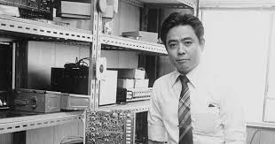
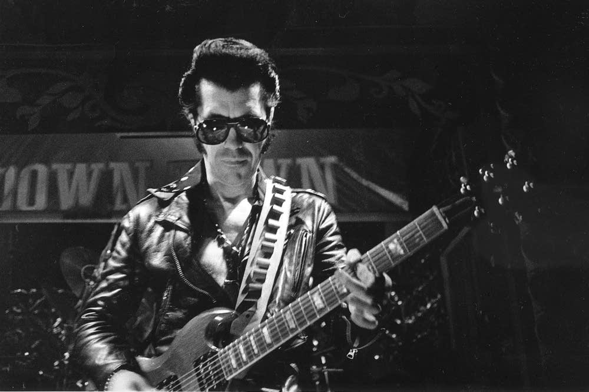
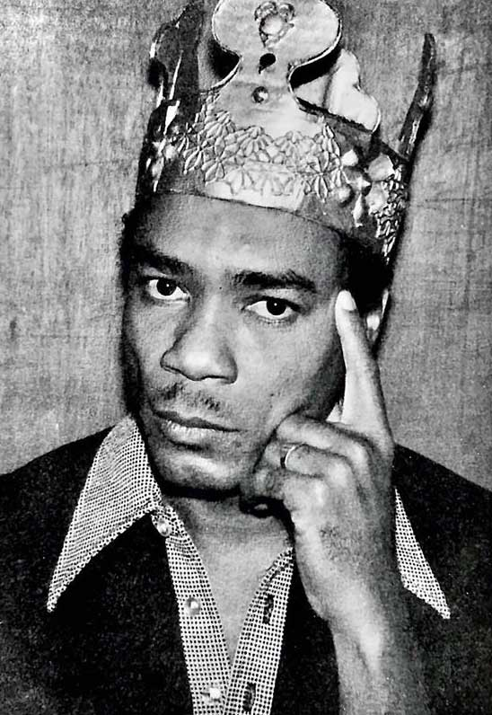
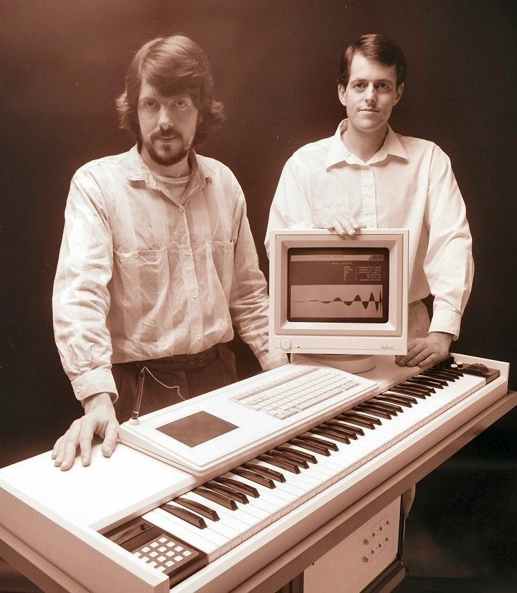
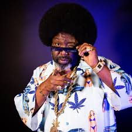
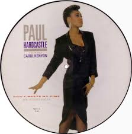

The Unintentional Architect of Acid House.
Link Wray was credited with inventing "fuzz" guitar after punching a hole in a speaker giving him a distorted guitar sound.
The Jamaican engineer who invented dub music and the concept of the remix by using a mixing desk as an instrument, influencing all of electronic music.
Australian engineers and entrepreneurs who co-founded Fairlight Instruments and revolutionized music production by creating the Fairlight CMI (Computer Musical Instrument) - the world's first digital sampling synthesizer.
Afroman (Joseph Foreman) is the cult-favorite rapper whose humorous, weed-infused storytelling created some of the most quotable lyrics in hip-hop history.
Carol Kenyon is one of those powerhouse vocalists whose voice can stop you in your tracks. Best known for delivering the soaring, dramatic lead on Heaven 17’s 1983 hit “Temptation”'
